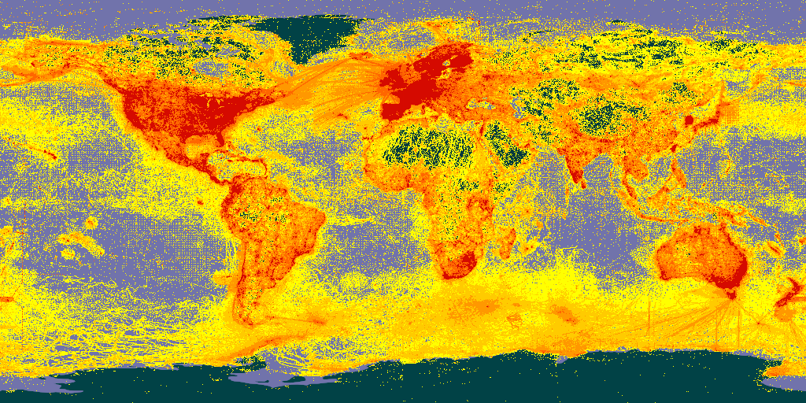
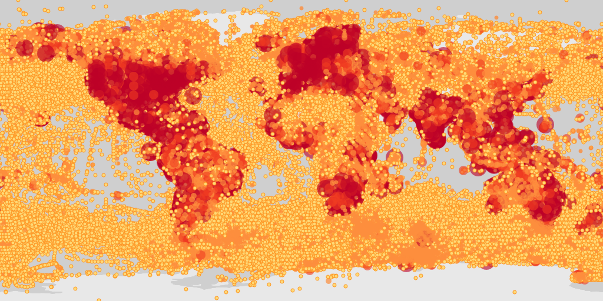
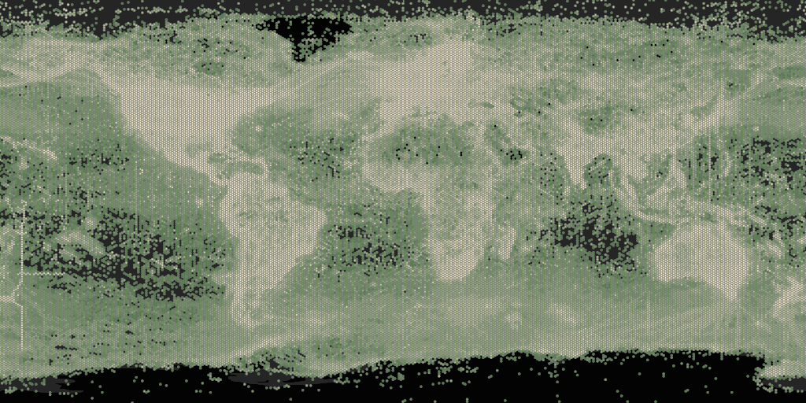
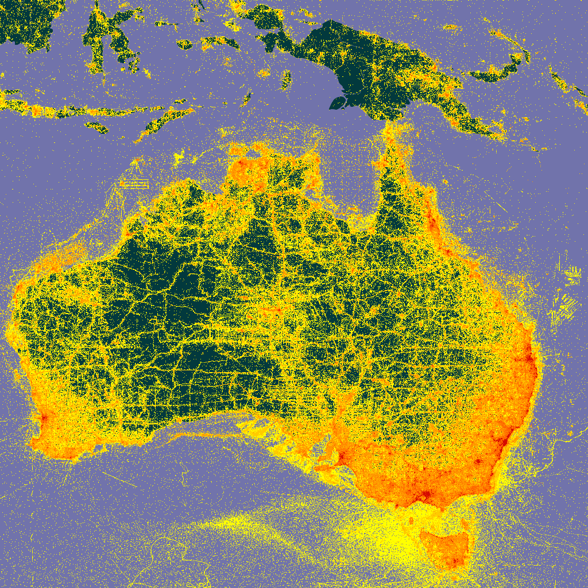
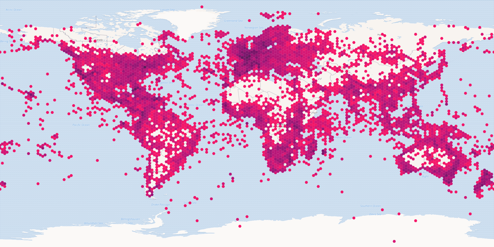

Creating maps from occurrences
John Waller
2023-08-02
Source:vignettes/creating_maps_from_occurrences.Rmd
creating_maps_from_occurrences.RmdIntroduction
Large datasets of millions of lat-lon points can be difficult to plot
using ggplot2 or base graphics. In these cases, using the
GBIF maps API with
rgbif::map_fetch() can be a good option.
However, if you would like to make a complex graphic with different
colors, shapes, and legends, using ggplot2::geom_sf() is a
better option. Below I will give examples using both methods.
Using map_fetch()
requires >= rgbif 3.7.8
map_fetch() will return the default GBIF pixel map of
all occurrences map as a magick::magick-image. To save this
png you can use magick::write_image().

It is also possible to make static maps that look like default occurrence search maps. See the maps api page for available styles.
map_fetch(taxonKey=212,style="scaled.circles",base_sytle="gbif-light")
For “poly” styles it is also possible to plot set the
hexPerTile parameter, so that the binned occurrence data is
essentially shown at a higher resolution. A tile is an individual
png image that is fetch from the API in order to make a
map. The default settings of map_fetch() will fetch two
images, so the image below has 400 hexagons across the width of map.
map_fetch(hexPerTile=200,style="green.poly",base_style="gbif-dark",bin="hex")
There is also the option to plot with polar or artic projections. For example, penguin records.
map_fetch(srs='EPSG:3031',taxonKey=7190978,style='glacier.point', base_style="gbif-dark")
It is also possible to get views other than just the global map, by
zooming in and selecting only certain map tiles with z,
x, y.
Seleting tiles can be tricky to get right, but with a little
trial-and-error, you can usually get close to the map you want to have.
One trick for getting the right tiles, is to look at this demo
page, where the z,x,y values are printed on the center
of each tile.
For example, you can see what the tile values for a zoomed in map of Australia would be here.
map_fetch(z=3,x=13:14,y=4:5)
Be aware that selecting many tiles will create a large image, and
might crash your R session. You can control the resolution of your final
image with format, with format="@4x.png" being
the highest possible value.
Below are some areas to give you an idea of how
z,x,y it are working.
# Europe
map_fetch(z=3,x=7:9,y=0:2)
# Africa
map_fetch(z=3,x=7:10,y=2:5)
# Hawaii
map_fetch(z=6,x=6:9,y=23:25)
# South Africa
map_fetch(z=5,x=34:38,y=19:22)
# Ukraine
map_fetch(z=6,x=70:78,y=13:16)
# Iceland
map_fetch(z=6,x=55:59,y=8:9)
# Capri Is.
map_fetch(z=12,x=4419:4420,y=1124:1125)I suggest using this interactive page for getting the tile numbers.
Keep in mind that the the GBIF maps API wasn’t designed to make high
quality static maps, like it is being used for in
map_fetch(). It was designed for interactive use on the GBIF website, so the API
design reflects this reality.
When making maps, the named paramters,
taxonKey, datasetKey, country,
publishingOrg, publishingCountry,
year, and basisOfRecord are going to be the
easiest to use. However, It is also possible to make “any” map (any search
filter) using source=adhoc.
# all occurrences with iucn status critically endangered
map_fetch(z=1,x=0:3,y=0:1,source="adhoc",iucn_red_list_category="CR",
style="iNaturalist.poly",base_style='osm-bright',bin="hex")
map_fetch() can also tell when you have used a parameter
that is no a default parameter and automatically switch to
source="adhoc" for you. I have found that point style don’t
work well with source="adhoc", so map_fetch()
will give a warning if you try to use a point style with
source="adhoc".
Here are some examples of maps with different parameters and styles.
adhoc is needed here because recordedBy
isn’t one of the named paramters. map_fetch() automatically
detects this and switches source to “adhoc”.
map_fetch(recordedBy="John Waller")Occurrences in the OBIS network. Note that squareSize
only works with bin="square".
map_fetch(z=1,source="adhoc",style="green.poly",squareSize=64,bin="square",network_key="2b7c7b4f-4d4f-40d3-94de-c28b6fa054a6")Map of Texas using the gadm filter.
map_fetch(z=4,x=6:7,y=4:5,gadm_gid="USA.44_1",style="blue.marker") map_fetch() is generally forgiving and will give you
back at least some map with warnings or blank images when the parameters
don’t work.
map_fetch(x=1:5) # no tiles exist past 2, so blank images are returnedAll specimen bird records from the year 2000.
map_fetch(taxonKey=212, basisOfRecord="PRESERVED_SPECIMEN", year=2000,style="classic-noborder.poly") Map of all country centroid locations.
map_fetch(distanceFromCentroidInMeters=0,base_style="osm-bright")In general, adhoc maps are harder to make look nice, but usually
picking a non-point style and tuning hexPerTile and perhaps
also squareSize, will make a nice map.
map_fetch(source="adhoc",project_id="BID-AF2015-0134-REG",style="green2.poly",hexPerTile=50)A tip for getting the un-named adhoc parameters is to pull them from the occurrence search URL after looking them up via the web interface.
# https://www.gbif.org/occurrence/map?advanced=1&project_id=BID-AF2015-0134-REG
map_fetch(source="adhoc",project_id="BID-AF2015-0134-REG") Using geom_sf()
The GBIF maps API is powerful and useful, but can be frustrating if
your plot needs a some custom styling or legends. If you don’t have a
large dataset, then using
ggplot::geom_sf() can be a good option.
library(ggplot2)
library(sf)
library(rnaturalearth)
# occ_download(pred_default(),pred(taxonKey,"1427067"),format="SIMPLE_CSV")
worldmap <- ne_countries(scale = 'medium', type = 'map_units',returnclass = 'sf')
# a download I made of all Calopteryx splendens occurrences
d <- occ_download_get('0001707-230810091245214') %>%
occ_download_import()
d_sf <- sf::st_as_sf(d, coords = c("decimalLongitude", "decimalLatitude"),
crs = "+proj=longlat +datum=WGS84")
# color occurrences by basisOfRecord
ggplot() +
geom_sf(data = worldmap) +
geom_sf(data = d_sf,aes(color=basisOfRecord))
See ggplot2 docs for more.
Using leaflet
Since the GBIF maps API was designed to work as an interactive map, it can be used with leaflet.
library(leaflet)
leaflet() %>%
addTiles() %>%
addTiles(urlTemplate='https://api.gbif.org/v2/map/occurrence/density/{z}/{x}/{y}@1x.png?style=scaled.circles&taxonKey=5219404') See leaflet docs for more.